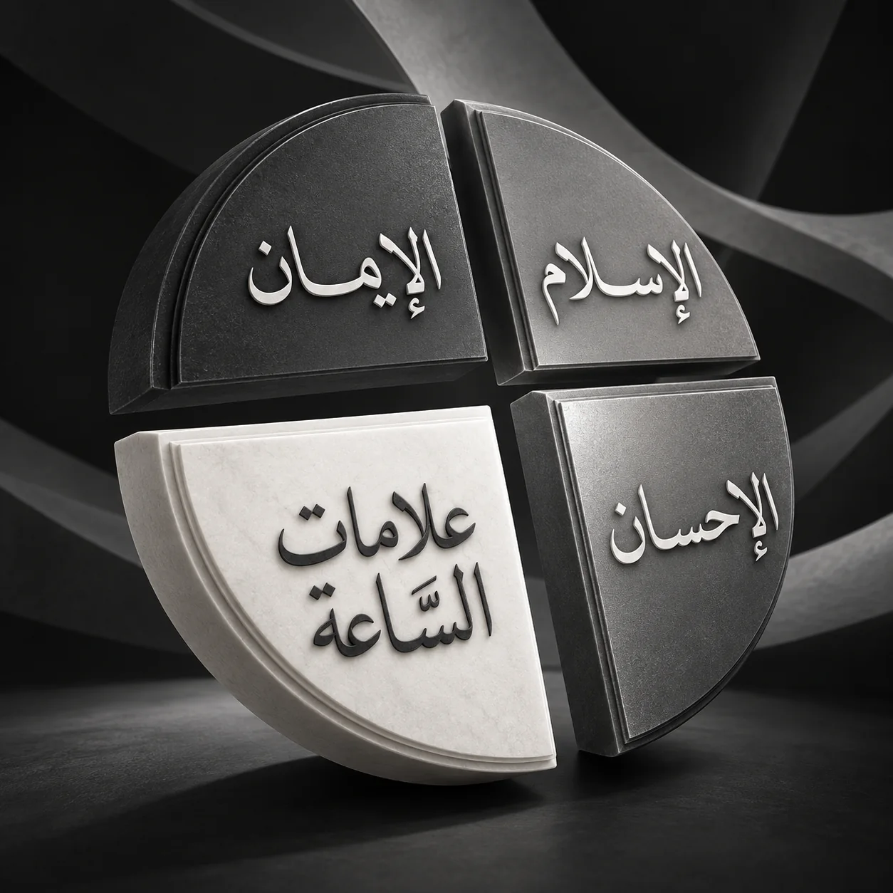

فقه التحولات
AI Fiqh al-Tahawwulat
Fiqh al-Tahawwulat
Explore Habib Abu Bakr al-Adni al-Mashhur’s works on signs of the times, civilizational change, and sunan al-mughayyarāt through books and lecture archives.
Open in the appAI for Islamic Scholarship
OpenTurath AI keeps seekers of knowledge company as they read. You ask, it explains, then points you to the passage and its source in the books and lectures of the scholars.
In the sciences of the turath, one wrong attribution or one altered passage can unsettle an entire discussion. These three things happen most often with general-purpose AI.
Where general AI often goes wrong
An opinion is pinned on the wrong scholar, or several schools are blended into one answer without method.
Titles, volumes, and pages look convincing, but cannot be found when you check the printed book.
A ruling is quoted without its exceptions, and the author's and commentator's meaning changes with it.
How OpenTurath answers it
OpenTurath does not ask for your blind trust. It helps you reach the original passage faster, so you can check the text yourself.
This is an original OpenTurath answer to a fiqh question, with quotations from the books of the Shafi'i school.
How does the Shafi'i school explain the ruling on skin contact between a man and a non-mahram woman in relation to wudu? Explain its limits and exceptions.
Short answerIn the Shafi'i school, skin meeting skin between a man and a non-mahram woman breaks wudu, for the one who touches and the one touched, with or without desire, intended or not. The basis is the verse “aw lamastumun nisa'” (An-Nisa' 4:43, Al-Ma'idah 5:6).
Each reference comes with its Arabic text.
Start understanding the books without first conquering their language and terms.
Search discussions across books, compare accounts, and keep references for your writing.
Prepare material, check the evidence and passages, then deliver with more confidence.
Some figures from the data of the first public release. They keep growing as books are added.
Each assistant holds only the books of its field and works the way that field works, so answers do not blend.
Explore Habib Abu Bakr al-Adni al-Mashhur’s works on signs of the times, civilizational change, and sunan al-mughayyarāt through books and lecture archives.
Open in the appStudy Shāfiʿī law through Al-Umm, Minhāj al-Ṭālibīn, Tuḥfat al-Muḥtāj, and Nihāyat al-Muḥtāj. Explore source passages, legal distinctions, and volume and page references.
Open in the appExplore Hanafi jurisprudence from Ẓāhir al-Riwāyah to Al-Hidāyah and Radd al-Muḥtār. Follow the relationship between foundational texts, commentaries, and fatwas.
Open in the appExplore Maliki law through Al-Mudawwanah, Mukhtaṣar Khalīl, and the Maghribi fatwa tradition, attending to transmitted positions, practice, and distinctions within the school.
Open in the appRead Hanbali law through Al-Mughnī, Al-Muqniʿ, and Al-Inṣāf. Compare reports from Imam Aḥmad, legal positions, and explanations by the school’s scholars.
Open in the appCompare evidence and legal reasoning across the schools through Ibn al-Mundhir’s al-Ishrāf and al-Awsaṭ and al-Fiqh al-Islāmī wa-Adillatuh. Trace fatwas and new cases, Islamic governance, and inheritance shares.
Open in the appStudy linguistic indications, analogy, and methods of derivation across the four schools through al-Mustaṣfā, al-Lumaʿ, and al-Burhān, together with legal maxims, al-ashbāh wa-l-naẓāʾir, and their exceptions.
Open in the appTrace texts and chains of transmission in the Six Books, musnad collections, and major hadith sources. Compare wording, chapter placement, and hadith numbering.
Open in the appStudy the meanings of hadith through Fatḥ al-Bārī, ʿUmdat al-Qārī, and al-Nawawī’s commentary on Ṣaḥīḥ Muslim. Explore word explanations, legal benefits, and the readings of different commentators.
Open in the appStudy isnad criticism, hadith classification, narrator evaluation, and hidden defects through the methodological discussions of Ibn al-Ṣalāḥ’s introduction and Tadrīb al-Rāwī.
Open in the appExplore narrators, jurists, and scholars through biographical dictionaries. Read Tahdhīb al-Tahdhīb and Siyar Aʿlām al-Nubalāʾ for teaching networks and narrator assessments.
Open in the appStudy verses through the commentaries of al-Ṭabarī, Ibn Kathīr, and al-Qurṭubī. Connect transmitted and analytical interpretation with occasions of revelation, abrogation, and principles of tafsir.
Open in the appStudy articulation, letter qualities, and principles of measured recitation. Explore the ten readings, their transmission paths, and their textual foundations alongside oral instruction.
Open in the appStudy Sunni creed in the Ashʿari and Maturidi traditions. Examine rational and transmitted evidence, theological terminology, and scholarly responses to questions of belief.
Open in the appStudy purification of the soul, spiritual discipline, litanies, and remembrance. Read Iḥyāʾ ʿUlūm al-Dīn and Al-Adhkār to connect knowledge, practice, and cultivation of the heart.
Open in the appRead passages through grammar, morphology, rhetoric, logic, and lexicons. Trace word usage and shades of meaning across Arabic language and literature.
Open in the appFollow the Prophet’s biography, the rightly guided caliphs, and the development of Islamic civilization. Examine chronology, transmitted accounts, and geographical and historical context.
Open in the appTrace titles, authors, manuscripts, and publication histories through Kashf al-Ẓunūn and bibliographical dictionaries. Study textual editing and the assessment of authorship.
Open in the appIn the hadith of Jibril, the Prophet answered four questions. The first three are the constant sciences: fiqh, creed, tasawwuf. The fourth studies what changes, the signs of the times, and guards the other three.

Calling to God with wisdom and good counsel, guarding the tongue from reviling and the hand from bloodshed, except where the Law requires.
Protecting the honour of integrity and chains of transmission from the disorder of change and misleading trials, in the sciences of creed, law, and spiritual conduct.
One field with five assistants, each with its own job.
Each assistant keeps only to the books of its field. Fiqh and hadith work differently and are never mixed.
Books are chosen one by one so scholarship is not politicised or used to bring other groups down.
Scholars are given access to review the content of their fields, and experts guide the method.
Answers point to the book, volume, and page where available. AI explanations are still verified with a teacher.
The book comes first, the answer follows.
AI explanations should be verified with a teacher, especially for practice and fatwa.
Read the scholarly guidelinesOne name, four paths that complete each other.
An Islamic AI grounded in turath, covering all fields of knowledge and the heritage of the scholars. The aim: to be the frontier of turath-based Islamic AI.
Explore the fieldsA book download hub bringing every edition and many download sources onto one page. The aim: to be the largest book download hub in the world.
Helps read and critically edit manuscripts: word meanings, the figures mentioned, and the hadiths and verses cited. The aim: to be the most accurate manuscript AI in the world. In our tests its accuracy is very high.
Learning to use AI for seekers of knowledge: from conversation, images and da'wa video, to building apps and AI agents.
One page of a book, one hour, and still no understanding. That is where OpenTurath began.
The founder is a student of the sacred sciences. He once translated a book word by word, spent about an hour on a single page, and still did not understand. He built OpenTurath alone to answer that difficulty, with scholars checking the content.
Announced at Al-Wasatiyah University, Hadramawt, on 7 May 2026, before scholars
Available for Android, macOS, and Windows. One Google account for every device.